Отзывы студентов о пребывании и учебе в Университете Сорокаба (Бразилия)
В России Бразилия асоциируется в первую очередь с пляжами, карнавалом, сельвой и обезьянами... в общем недостаточном присутствии цивилизации :) и никак не с учебой. Постараюсь разбить этот стереотип, рассказав о своем опыте обучения в г. Сорокаба (Сан-Паулу, Бразилия).
Сорокаба
Во-первых о городе – г. Сорокаба находится в штате Сан-Паулу, где сосредоточена гланая промышленность страны. Население города составляет приблизительно 700 000 человек.
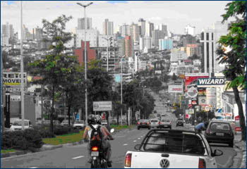 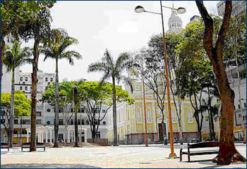
Удаленность от Сан-Паулу – 80 км (час на машине). Еще час и на побережье :).
Особую гордость жителей представляет факт, что в Сорокабе находится около 1 700 промышленных производств, которые экспортируют свою продукцию в 115 стран мира, среди которых около 100 – мультинациональные корпорации, которые, кстати, активно нанимают студентов на практику.
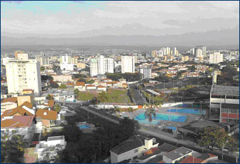 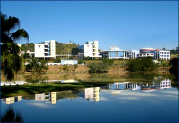
Название Сорокаба происходит из языка индейцев (как и многих других городов) и обозначает terra rasgada (пт. разорванная земля) – город построен на холмах, плоские участки земли просто отсутствуют, что делает пешие прогулки очень утомительными :).
Университет
Университет находится за городом в 20 минутах езды на автобусе от центра.
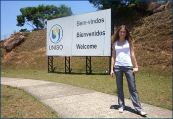
Особенностью университета является его форма устройства – universidade comunitaria («коммунитарный университет»), в отличиии от коммерческих вузов у университета нет хозяина – все решения и управление осуществляется conselho universitario (университетским советом), куда входят ректор, преподаватели, администрация Сорокабы, студенты и т.д. И в отличие от государственных – обучение платное (от 250 до 500 евро в месяц (!!!!)).
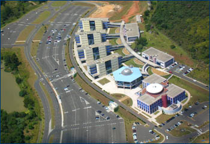 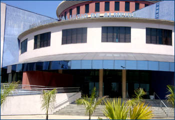
Также университет оказывает администрации различные услуги в сфере медицины, юристпруденции, фармакалогии и т.д. (помощь малоимущему населению). Например, кампания по сбору ненужных лекарств, их сортировки и распределению нуждающимся, помощь детям-инвалидам.
Самым явным плюсом такого устройства является то, что все вырученные деньги инвестируются в развитие университета и различные проекты (так как университет не получает инвестиции от государства).
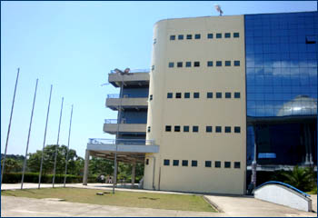 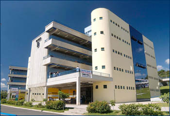
Еще одной интересной особенностью является расписание. Занятия проводятся с 7.40 и до 11.00 и с 19.00 и до 22.40. Благодаря этому все студенты имеют возможность одновременно учится и работать (почти 80% посещают занятия в вечернее время).
Унивеситет сотрудничает более чем с 1000 предприятий в отношении практики студентов.
Большинство предприятий приглашают на практику уже с первого курса. Стажеры получают больше, чем обычные рабочие. Максимальный срок стажа на одном предприятии – 2 года.
Университет города Сорокабы сотрудничает с университетами следующих стран: Мексики, Чили, США, Испании, Колумбии, России, Германии, Италии, Польши.
Но в этом семестре нас, иностранных студентов, только трое – я и 2 студентки из Леона (Испания).
Что очень мотивирует к быстрому изучению португальского.
Бразильцы
Супердружелюбные, всегда готовы помочь, едят только с вилкой и ножом, склонны носить официальную одежду или просто хорошо выглядеть.
Язык
Португальский. Я никогда не изучала португальский, но говорю бегло по-испански. Под конец второго месяца достигла уверенного среднего уровня понимания и говорения.
Бразильский вариант португальского очень близок к испанскому и если говорить медленно по-испански, то от 50 до 100 процентов бразильцы поймут. Научный язык похож еще больше, так что трудности у меня были только с разговорной речью. Диалект, на котором говорят в штате Сан-Паулу, очищен от характерных для португальского шипящих и очень легко воспринимается на слух.
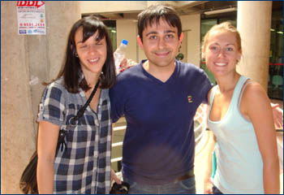 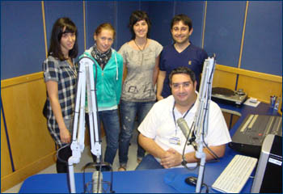 иностранные студенты с бразильскими кураторами интервью иностранных студентов для университетского радио